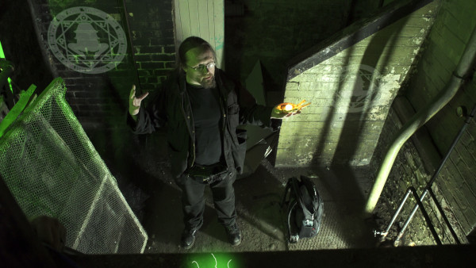
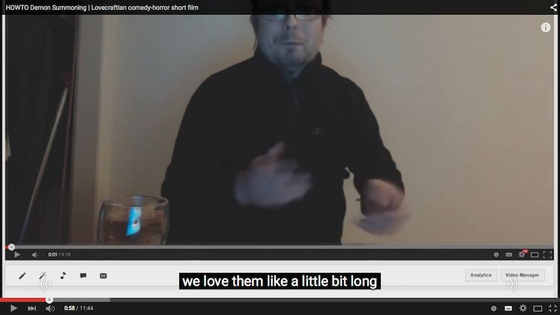
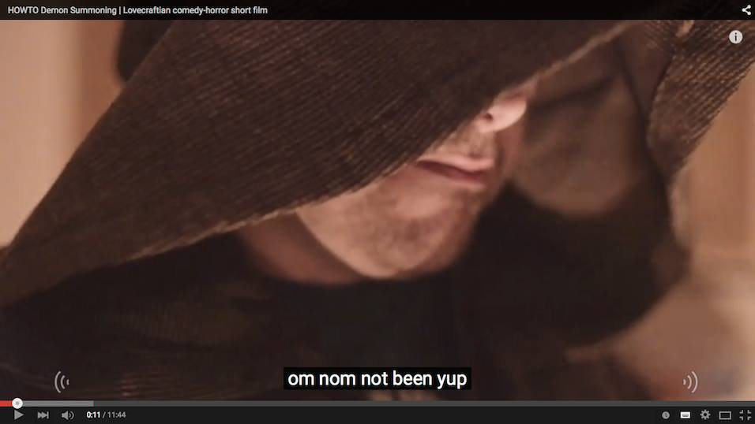
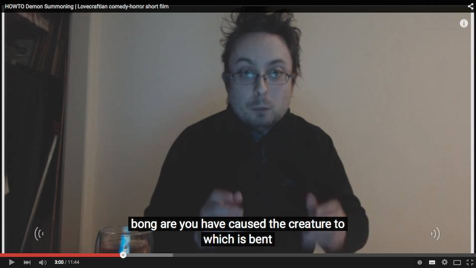
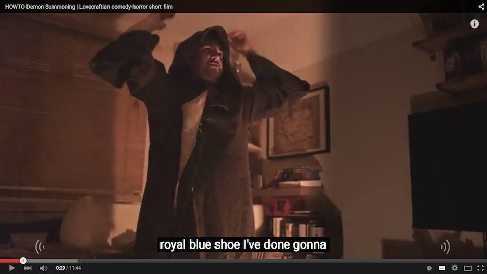
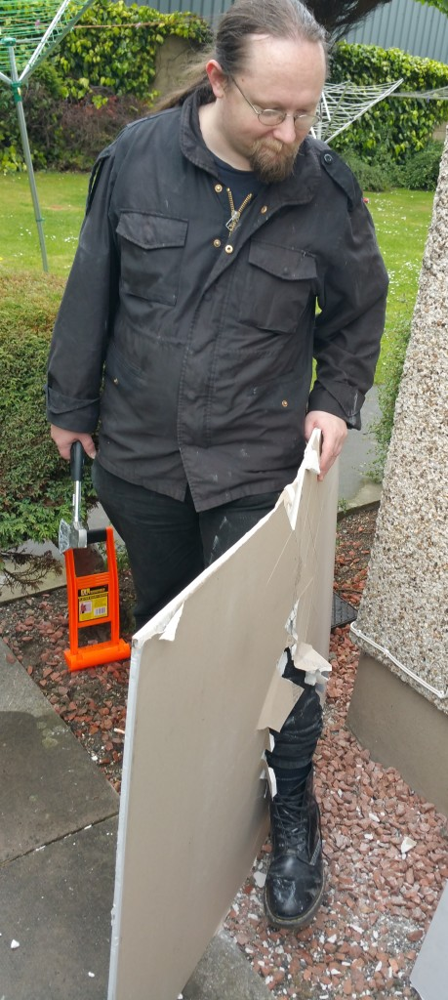
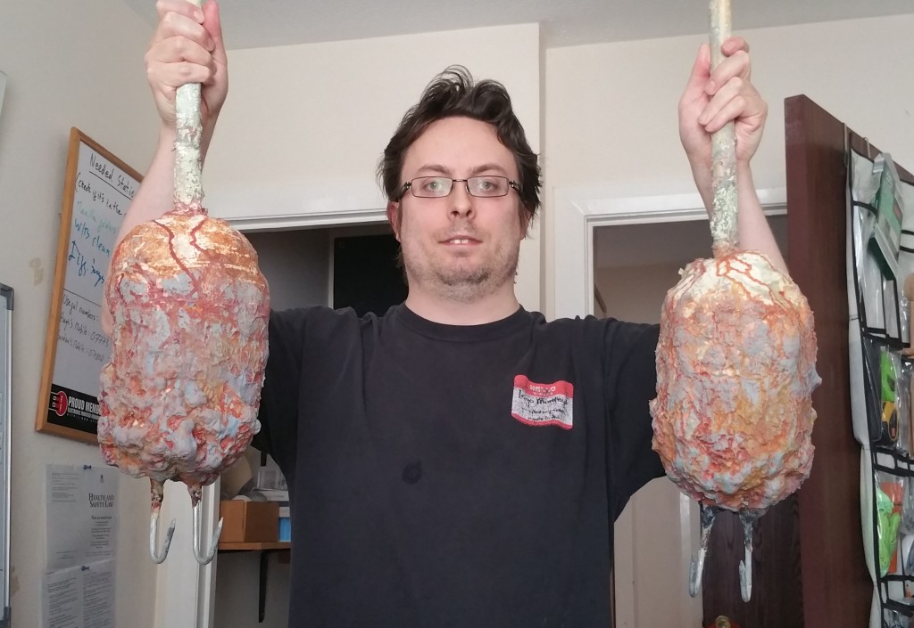

The NEXT PART of my Lovecraftian horror/comedy series (which started with “HOWTO: Demon Summoning”) is finally ready for release!
It’s coming out next week, on Tuesday April 12th.
Starring Ian Mulliner, Vicki Glover and Phil Crawley, it’s much more action-heavy than HOWTO, as Ian and Vicki’s profit-seeking occultists attempt to get themselves out of the horrible occult trap they’ve sprung…
More news soon!
If you want to keep updated, the best way is to join my infrequently updated mailing list. Click the button below…
This weekend I’ll be a guest at Conpulsion, Edinburgh’s RPG and general gaming convention, alongside Charles Stross, M. Harold Page and many other gaming and writing luminaries.
I’ll be around the con for a good portion of the weekend, and specifically I’ll be speaking on the following panels (subject to change at the last minute like all good conventions, of course!) -
So you want to design games? Saturday, 15:00
The Right Art For Games Saturday, 16:30
Changing Technology and the Future of Games Sunday, 10:00
Should be a great weekend! I might even be announcing something at the convention…
After many years of not doing so, I’ve finally decided it’s time. I’m making a game.
Specifically, I’m making a dark, story-driven JRPG called Inquisitor’s Oath.
It’s now in Steam Greenlight’s Concepts section - it’s not up for full Greenlight yet, this is just to get an idea of what people think. So, have a look, vote, let me know!
>
> The dogs are at your heels. The smell of burned buildings and your former friends' blood saturates your hair. Did you do the right thing? Should you have left her to be burned?
>
>
>
> In the midst of chaos, will you be able to protect her now?
>
>
We’re in the running for Best Comedy and Best Visual Effects.
The awards will be decided on December 5th - fingers crossed!
Things That Happened
Hugh spoke at “Copyright Reform: The Implications One Year On” in Bournemouth, alongside folk like Cassetteboy, Pirate Party MP Asta Helgadottir, and some seriously eminent legal minds. Great event and exciting times for UK copyright: given the calls for transformative use protection in the UK, we might yet see an era of free creation in game-based Machinima! The talk was recorded, and I’ll provide a link when it’s available.
HOWTO: Demon Summoning continues its festival run, with screenings at Lillifest in St Louis and TBUFF, as mentioned above.
HOWTO also showed at Edinburgh-local event Thistle Film Night, and organiser Simon Fox interviewed him afterward about the making of HOWTO. We’ve got the video of that, and I’ll be sending a link out to folk on my mailing list shortly!
Things That Are In The Process Of Happening

Shambler (the project formerly known as DANGEROUS TREASURES) is in the final sound design stages. Hoping to get it out this year! It’s looking awesome, as you can see above.
Cellar And Tower is next in the queue after DANGEROUS TREASURES. It’s picture-locked, just waiting on sound, music, and some final visual effects.
Carcosa Episodes 3 and 4 are well underway: expect to see Jack and Ailsa, as they starting to realise just how deep and twisted the rabbit hole is, early in the New Year.
And beyond that… I’ll just drop the name of the next project, which is HOWTO: Resurrection.
Lots of stuff going on over here, so here’s a quick summary of the coolest bits!
HOWTO: Demon Summoning is on the Official Selection for the Fargo Fantastic Film Festival! This is HOWTO’s first festival showing, and I’m really pleased!
I’m running a panel at the prestigious Raindance Film Festival entitled “Hacking Hollywood VFX”. I’ll be joined by 3-4 panelists - just confirming the final slots, but I’m very pleased to say that indie filmmaking legend Chris “Guerilla Filmmaker” Jones and Paddy Easton, VFX supervisor on dozens of Hollywood films have already confirmed as the first two panelists.
“Cellar and Tower” AND “Dangerous Treasures” are both in post-production. Yep, I’ve somehow ended up running the two projects more or less side by side, and they should be seeing the light of day in a couple of months or less. These two films are set in the same universe as “HOWTO: Demon Summoning”, but have quite different styles - Cellar and Tower diving into Lynchian territory, whilst Dangerous Treasures is more of an action-horror…
After that, part 2 of Carcosa is on the table, and then into the next in the HOWTO series, which is provisionally titled HOWTO: Resurrection…
YouTube’s Auto-Subtitle function, whilst very impressive, doesn’t cope well with the eldrich tongues of blasphemous creatures that raged and danced upon the Earth before the stars changed and they sank to endless slumber.
Here are some choice attempted examples from HOWTO: Demon Summoning, as the Autotranslator attempts to cope with the Authentic R’lyehan Tongue in the script…




And if you’d like to see more, watch HOWTO with the subtitle function turned on…
Enjoy, and please do feel free to share your favourites…
IT’S ALIIIIVE! Yes, the thing I’ve been trailering all week is here.
Summoning a demon using a YouTube tutorial. What could go wrong?
Find out now as disgruntled startup founder Dave attempts to YouTube his way through the Dark Arts: watch Cthulhu Horror-Comedy HOWTO: Demon Summoning, my first live-action film after 20 years of making animated movies.
And please do spread the word! Shares, comments, social media submissions all much appreciated. They’re super-important because as usual my publicity budget isn’t exactly studio-scale!
In the second part of Carcosa, secrets are revealed. Some of Ailsa’s secrets - our obsessive, apparently monied heroine - and some of the secrets of Carcosa itself.
Things are a bit quiet around here as I’m in final mad sprint around for shooting on my next live-action shoot, which starts tomorrow.
This one’s pretty exciting - monsters, magic, fights, and what I believe is a rather neat twist on the “four years later their footage was found” concept.
(For a small part of the film, don’t worry! It’s not all going Blair Witch on me.)
So, here are a few shots of the madness in progress, or at least in development:

My lead actor, Ian, discovers some flaws in the initial planned “kicking through boarded-up doorway” stunt.
“Drip molten wax on mummified hand” was actually on my to-do list this week. DONE.

We’re referring to these hideous claw props as the “doner kebabs from hell”.
Dangerous Treasures (which may still change name before release) is on track for a mid to late Summer release on all the usual video sites. Look out for it - and if you want to know when it appears, hit the “Let Me Know!” button below.
{kind=link}
{kind=link}